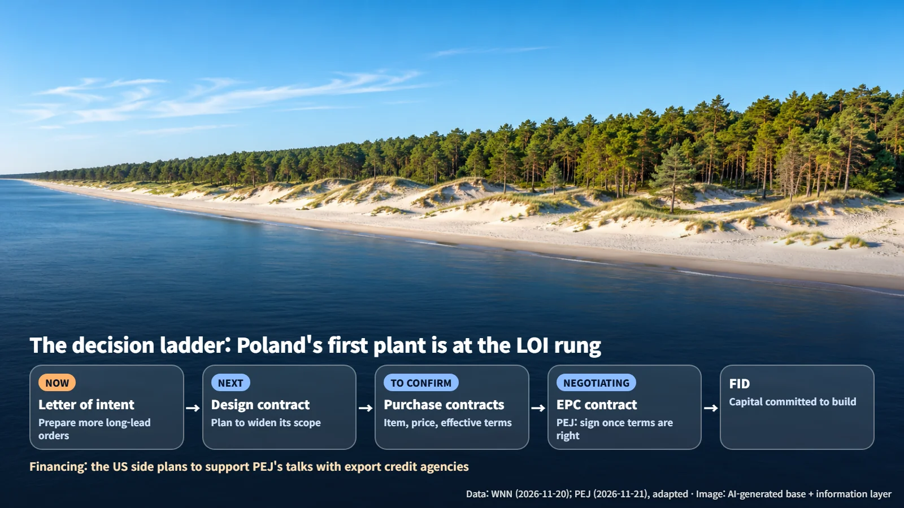
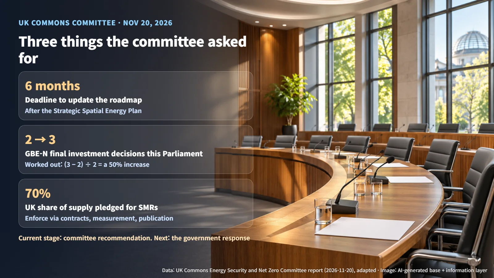

Poland · United Kingdom · Project development
Before Construction Starts: What Gets Decided First in Poland's AP1000 Project and the UK Nuclear Roadmap
PEJ and the Westinghouse-Bechtel consortium signed a letter of intent to prepare more long-lead equipment orders, while a UK Commons committee called for an updated nuclear roadmap.
Nuclear news is full of phrases like "letter of intent signed," "parliamentary recommendation," and "investment decision." Each sounds like a step forward, and each fixes a different amount of the project. Two stories from around 20 November make a useful pair: a letter of intent on long-lead equipment for Poland's first nuclear plant, and a UK House of Commons committee report on the nuclear roadmap. Read side by side, they show the order in which a nuclear project builds up its decisions before construction begins.
The Decision Ladder: From Letter of Intent to Final Investment Decision
A large nuclear project advances through a series of decisions, each resting on the one before. A typical sequence looks like a ladder:
- Letter of intent (LOI): a document in which the parties set out what they plan to prepare together. It lays the groundwork for later negotiations.
- Design development contract: a contract that develops the design ahead of the main contract. Widening its scope lets more preparatory work begin early.
- Purchase contract: a contract that fixes the item, price, and effective conditions for specific equipment, turning a plan into a firm order.
- EPC contract: the main contract under which engineering, procurement, and construction are delivered as a package.
- Final investment decision (FID): the point at which the owner and investors commit capital to building the plant.
The lower rungs set direction and preparation; the higher rungs commit money and responsibility. Knowing which rung a piece of news comes from tells you what to watch for next.

Poland: Why Prepare to Order Equipment Early
World Nuclear News (WNN) reported on 20 November that PEJ, the Polish project company, and the Westinghouse–Bechtel consortium signed a letter of intent to prepare the procurement of additional long-lead equipment. The work relates to the first unit of the three AP1000 reactors planned at the Lubiatowo-Kopalino site in northern Poland. The letter was signed in Warsaw at the 7th meeting of P-TEC, the transatlantic energy cooperation forum, and it sets out a way to expand the scope of the design development contract.
Long-lead items are large, critical components such as reactor pressure vessels and steam generators that take a long time to manufacture. When such an order comes late, the whole schedule can slip with it. Preparing procurement early allows contract negotiations and manufacturing preparation to move in parallel, which reduces schedule risk across the project. The logic is similar to ordering custom furniture with a long build time before the moving date is fixed.
Financing is moving alongside the hardware. According to the report, the US side plans to support PEJ's discussions with export credit agencies to fund investment tied to equipment supply. Export credit agencies are public financial institutions that provide loans or guarantees to buyers abroad in order to support their own country's exports. In effect, equipment procurement and project financing are being prepared as a single package.
The project currently stands on the letter-of-intent rung. In a statement on 21 November, PEJ said EPC negotiations are continuing and that it will sign once it has secured satisfactory contract terms. The earlier initial order and this new procurement preparation are separate milestones, and the specific terms and scope of any additional orders remain to be confirmed.
The UK: Three Things the Committee Asked For
On the same day, the House of Commons Energy Security and Net Zero Committee published its report reviewing the UK nuclear roadmap. The committee found that long-term policy uncertainty affects investment, workforce, and supply chain planning, and it recommended that the government set clear targets and delivery plans for large reactors as well as small modular reactors (SMRs) and advanced modular reactors (AMRs). Its core requests fall into three groups.
First, a deadline for an updated roadmap. The committee proposed that an evidence-based nuclear roadmap be updated within six months of the publication of the Strategic Spatial Energy Plan.
Second, a larger investment decision target. It recommended raising the target for Great British Energy–Nuclear (GBE-N) from two to three final investment decisions within the current Parliament. On the ladder above, FID is the top rung. Working it out, (3 − 2) ÷ 2 = a 50% increase in the target, which means one more project would need to climb all the way to the top rung within this Parliament.
Third, enforceability of local content. The committee judged that the commitment for 70% of supply on SMR projects to come from the UK lacks sufficient enforceability. It called for stronger contractual requirements, measurement and publication of delivery, and clear accountability for workforce planning. A 70% figure becomes a planning basis for domestic supply chain investment and skills training once it is written into contracts and results are published.
The report also proposed improvements to regulation and siting rules and progress on a geological disposal facility, and it highlighted that the Sizewell C financing model transfers construction risk to consumers. Alongside the ambition to build more, the committee is asking who carries the cost and risk.

What Needs to Be Confirmed Next
Both stories describe decisions taken before anything is final, and they differ in who acts and how binding the step is.
| Poland: letter of intent | UK: committee recommendation | |
|---|---|---|
| Who acts | PEJ and the Westinghouse–Bechtel consortium | Commons Energy Security and Net Zero Committee |
| Nature | Procurement preparation agreed between parties | Policy recommendation to government |
| Next decision-maker | PEJ, the consortium, export credit agencies | UK government |
In Poland, the next items to be confirmed are the expanded design development contract, the item, price, and effective conditions of additional equipment purchase contracts, the export credit financing discussions, and the signing of the EPC contract. In the UK, the next things to watch are the government's response and the updated roadmap, whether the GBE-N FID target changes, and the delivery timetable for local content conditions and workforce planning.
When a nuclear headline mentions a "letter of intent" or a "recommendation," it helps to ask which rung of the ladder the news sits on and who decides the next one. As follow-up contracts in Poland and the UK government's response arrive, we can check how far up the ladder each project has climbed.